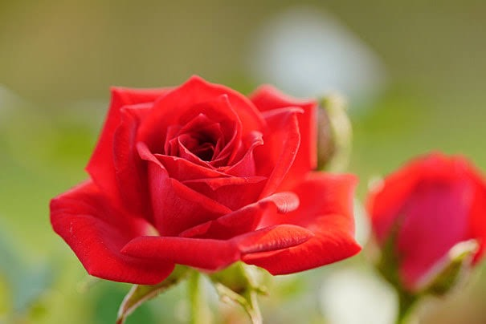
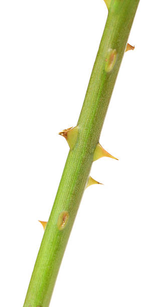
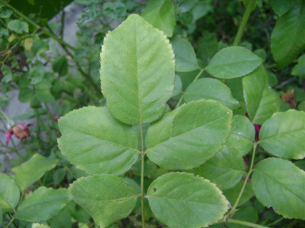
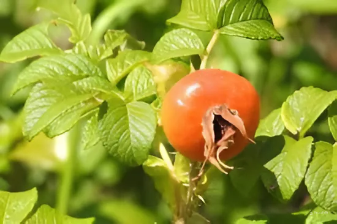

กุหลาบ (Rose) เป็นไม้ดอกที่ได้รับความนิยมอย่างแพร่หลายทั่วโลก มีความสำคัญทั้งในเชิงพาณิชย์ วัฒนธรรม และการประดับตกแต่ง การศึกษากุหลาบในด้านพืชศึกษาช่วยให้เราเข้าใจเกี่ยวกับโครงสร้าง การสืบพันธุ์ วงจรชีวิต และการดูแลรักษาอย่างถูกวิธี
ลักษณะทั่วไปของดอกกุหลาบ
1.ดอก
• รูปทรงหลากหลาย สีสันมีตั้งแต่สีขาว ชมพู แดง ส้ม ม่วง จนถึงสีเหลือง
• ดอกประกอบด้วยกลีบดอกเรียงซ้อนกันอย่างสวยงาม มีกลิ่นหอมเฉพาะตัวในบางสายพันธุ์
• เกสรตัวผู้และเกสรตัวเมียอยู่ในดอกเดียวกัน

2.ลำต้น
• มีลักษณะตั้งตรงหรือเลื้อย
• มีหนามแหลมเพื่อป้องกันศัตรูพืช

3.ใบ
• เป็นใบประกอบแบบขนนก มีใบย่อย 3-9 ใบ
• ใบมีขอบหยัก ลักษณะเป็นมันเงา

4. ผล
• ผลกุหลาบเรียกว่า Rose hip มีสีแดงหรือส้ม อุดมไปด้วยวิตามินซี

การสืบพันธุ์ของกุหลาบ
1. การสืบพันธุ์แบบอาศัยเพศ
• การผสมเกสรโดยลม แมลง หรือมนุษย์
• เมล็ดที่ได้จากการผสมสามารถนำไปปลูกเพื่อสร้างสายพันธุ์ใหม่
2.การสืบพันธุ์แบบไม่อาศัยเพศ
• การปักชำกิ่ง: วิธีที่นิยมเพื่อให้ได้ต้นใหม่เหมือนต้นแม่
• การตอนกิ่ง: ใช้สำหรับสายพันธุ์ที่ต้องการคุณภาพสูง
• การเสียบยอด: ช่วยเพิ่มความแข็งแรงให้ลำต้น
ประโยชน์ของกุหลาบ
1. ประโยชน์เชิงพาณิชย์
• ใช้ในอุตสาหกรรมผลิตน้ำหอมและน้ำมันหอมระเหย
• ใช้ในงานจัดดอกไม้ งานแต่งงาน และพิธีกรรมต่าง ๆ
2. ทางสมุนไพร
• กลีบดอก: ช่วยบำรุงผิวพรรณ และลดการอักเสบ
• ผลกุหลาบ (Rose hip): มีสารต้านอนุมูลอิสระและช่วยบำรุงสุขภาพ
3. การตกแต่ง
• ใช้ปลูกประดับสวนหรือภายในบ้านเพื่อความสวยงาม
• เป็นไม้ดอกสัญลักษณ์ของความรักและความงาม
การศึกษาในมุมวิทยาศาสตร์
1.การปรับปรุงพันธุ์
• การศึกษาสายพันธุ์กุหลาบเพื่อพัฒนาสีสัน รูปทรง และความทนทานต่อโรค
2. การวิเคราะห์โครงสร้างดอก
• ศึกษากลีบดอก โครงสร้างเกสร และระบบการผสมพันธุ์
3. การปลูกและดูแล
• ศึกษาปัจจัยที่มีผลต่อการเจริญเติบโต เช่น แสง น้ำ ดิน และปุ๋ย
• การควบคุมศัตรูพืช เช่น โรคราเพลิง เพลี้ย และแมลง